Activity 启动过程(一)
这里讲的是一个Activity启动另一个Activity的过程。
首先我们在activity.startActivity(),点进去我们可以看到如下
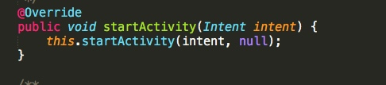
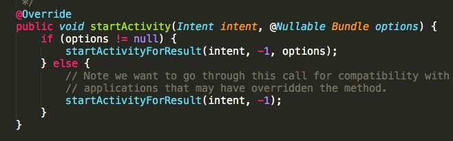
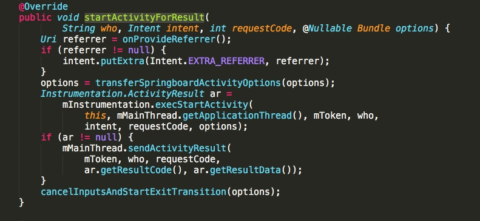
在Activity中最终都是调用startActivityForResult(),在这个方法中又调用mInstrumentation.execStartActivity()。
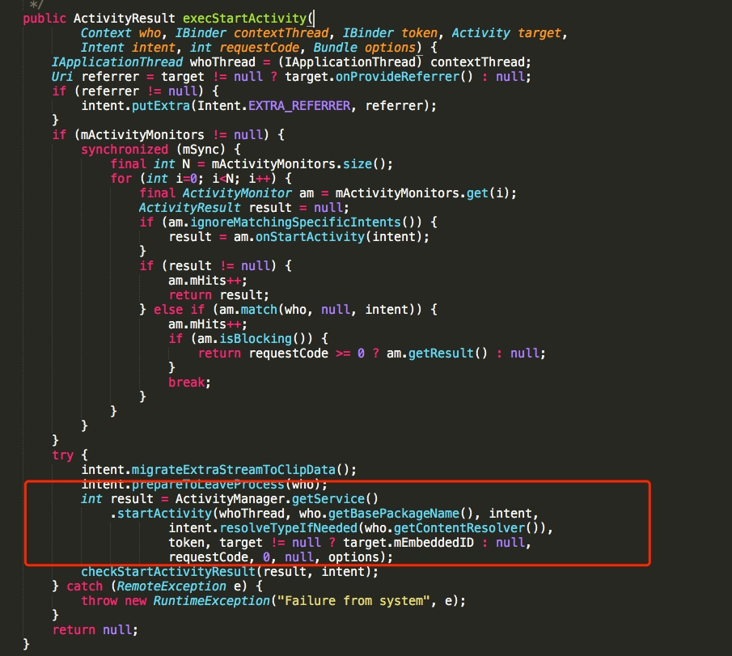
在这个方法里，调用了ActivityManager.getService().startActivity(),我们先来看看getService()会返回什么对象。
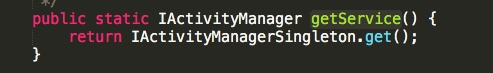
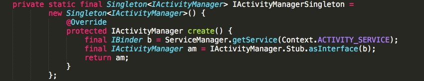
getService() 只是调用了IActivityManagerSingleton.get()。而IActivityManagerSingleton则是一个Singleton的实例。
Singleton的代码如下：
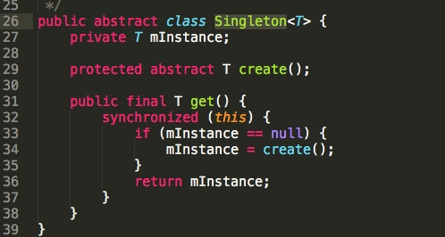
从Singleton可以看到，IActivityManagerSingleton.get()在第一次的时候会调用create()，而这个IActivityManagerSingleton 的create() 正是的前面看到的这个方法：

这里将通过IActivityManager.Stub.asInterface(b)返回一个IActivityManager对象实例。因此IActivityManagerSingleton.get()也将返回一个IActivityManager对象实例。
因为笔者这里看的是26的源码，26中增加了IActivityManager.aidl文件，这部分代码需要在AndroidXref中的IActivityManager.aidl中查看，部分定义如下：
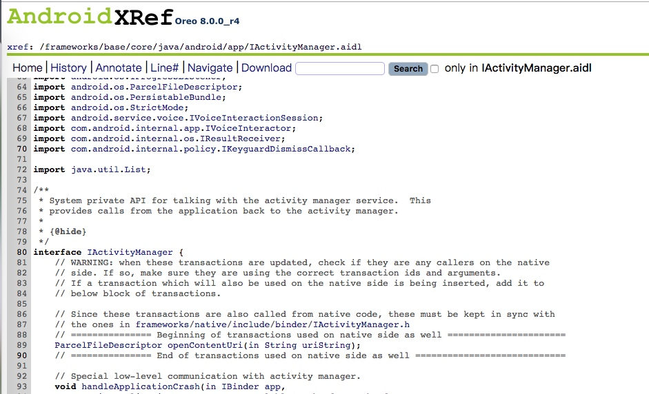
我们在使用aidl的时候，AS都会帮我们生成一个Stub和本地的代理对象。IActivityManager也会对应生成一个IActivityManager.Stub类，且它有个子类为ActivityManagerService
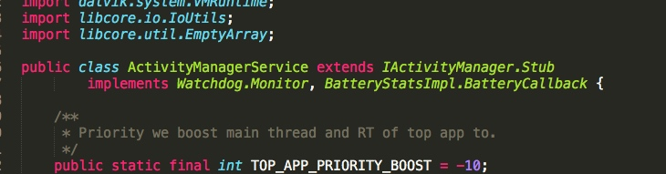
而我们之前IActivityManagerSingleton.get()取得的就是一个ActivityManagerService或者是ActivityManagerService的一个代理。
注：这一部分具体参考下Binder的定义及使用。另外我还没有说明如何能找到ActivityManagerService，这一部分都是参考其他文章所得，具体如何通过IActivityManager.aidl定位到这个类的，还需要再捋一捋。
现在我们回到Instrumentation
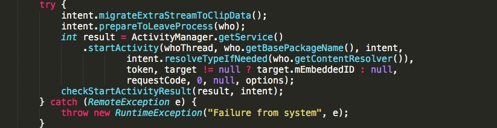
ActivityManager.getService() 即返回一个ActivityManagerService或者其代理对象。所以这里最终就是调用了ActivityManagerService.startActivity()
小结一：
这里使用简单的时序图来说明方法的调用过程。这里的AMS即时ActivityManagerService的缩写，之后读将采用这个缩写来代码ActivityManagerService.
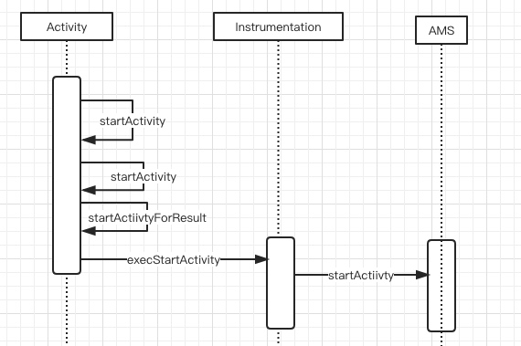
我们通过前面方法的查找，已经知道启动一个Activity之后，最终会调用系统的ActivityManagerService.startActivity(),接下来我们就看看这个方法又做了哪些操作。
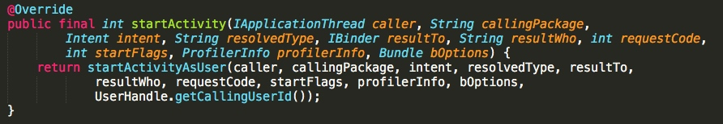
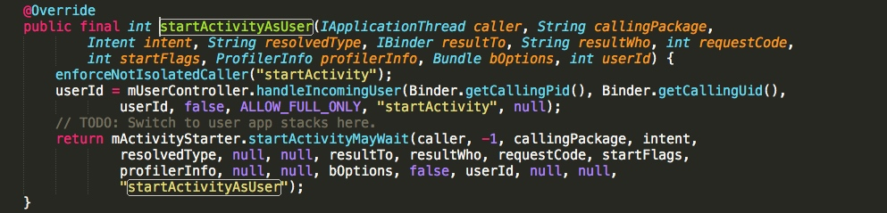
这里最后调用了mActivityStarter.startActivityMayWait(),这样就将调用过程转交给了ActivityStarter类。
在这个方法中可以看到下面这一句话，这主要是在收集目标Activity的信息，将信息存储在ActivityInfo中。
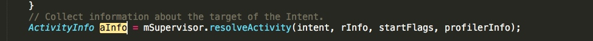
之后又调用了本类中的startActivityLocked()，如下：
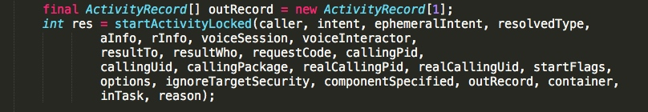
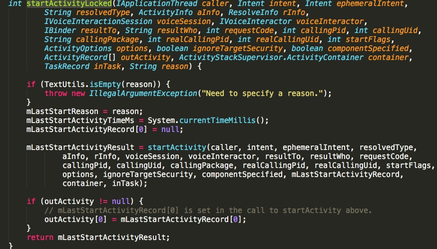
在这里校验了调用方法的原因。然后调用了ActivityStarter中的startActivity()。
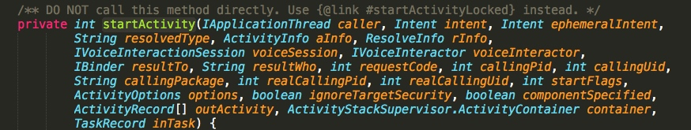
在这个方法中主要做了一些校验，包括：权限校验、component校验、目标activity信息校验等。同时创建一个ActivityRecord对象，用来存放这些校验过后的数据：
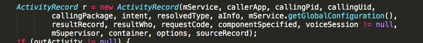
然后继续调用下一个startActivity()
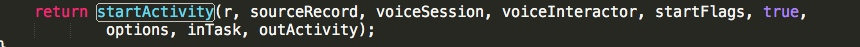
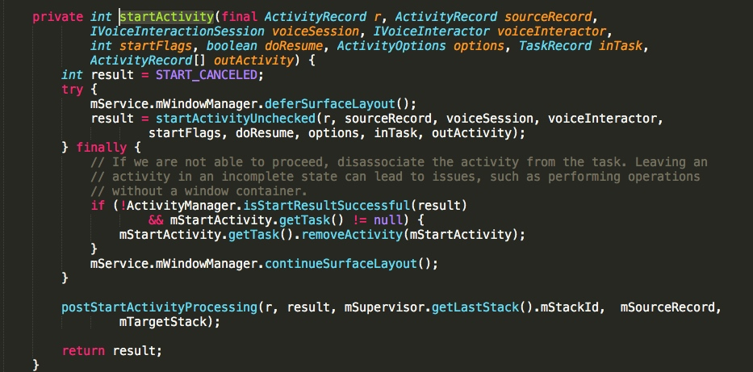
在这个startActivity()中将调用ActivityStarter的startActivityUnchecked()，startActivityUnchecked()方法挺长，主要是activity栈的处理，比如是否在栈顶、是否需要新建一个栈。在这个方法中将调用mSupervisor.resumeFocusedStackTopActivityLocked().
这是怎么回事呢？
首先我们回到这里

我们可以看到第六个参数设置为true，而这个true将一直跟着我们的方法传递下去，直到startActivityUnchecked调用了setInitialState()之后将这个true赋给了ActivityStarter中的mDoResume属性。
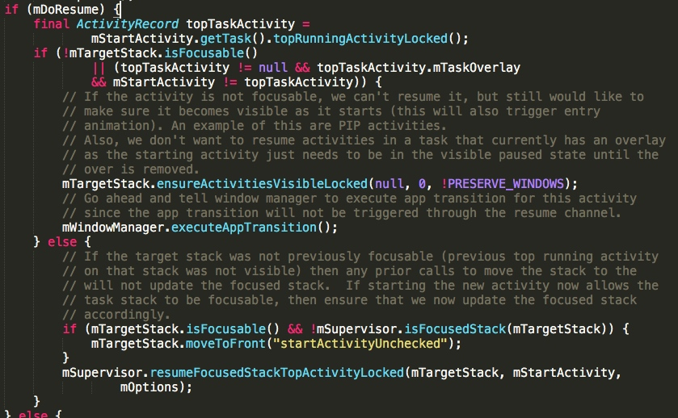
因此，最后我们将走入这个代码块。
这里两段英文，尝试着翻译一下：
If the activity is not focusable, we can't resume it, but still would like to make sure it becomes visible as it starts (this will also trigger entry animation). An example of this are PIP activities.Also, we don't want to resume activities in a task that currently has an overlay as the starting activity just needs to be in the visible paused state until the over is removed.
如果Activity不可聚焦，就不能重启它，不过我们仍可保证当它启动的时候是可见的。比如PIP的活动。我们不想重启一个可覆盖任务中的activities，因为开始的活动只需要处于可见的暂停状态，直到移除覆盖。If the target stack was not previously focusable (previous top running activity on that stack was not visible) then any prior calls to move the stack to the will not update the focused stack. If starting the new activity now allows the task stack to be focusable, then ensure that we now update the focused stack accordingly.
如果目标栈之前不可获取焦点（之前顶层的activity不可见），那么将该栈移动到不会更新的焦点栈中。如果现在是新建一个activity，就允许任务栈是可以获取焦点的，然后确保我们现在在更新相关的焦点栈。(英文太烂，自己都不理解翻译出来的是什么👻 -_-! )
根据上面两段注释，我们可以认为这里会调用mSupervisor.resumeFocusedStackTopActivityLocked(),这里的mSuperVisor对应的是ActivityStackSupervisor类。接着继续看下去：
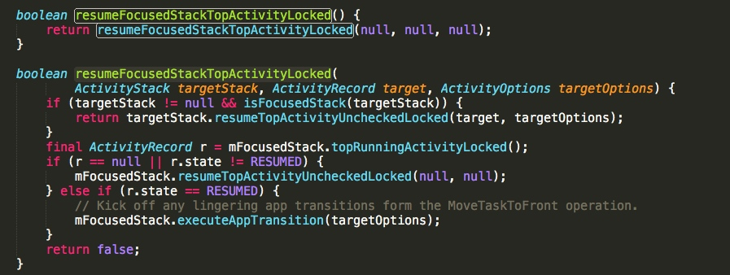
我们在之前已经构造出一个ActivityRecord,所以这里会调用mFocusedStack.resumeTopActivityUncheckedLocked().其中mFocuseStack是ActivityStack的一个实例。
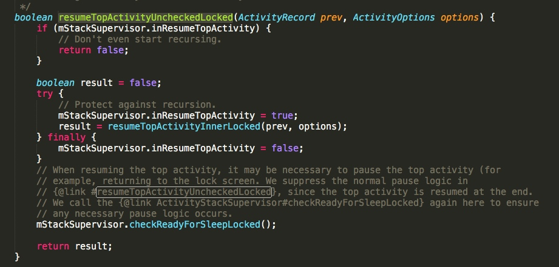
在resumeTopActivityInnerLocked()中将调用
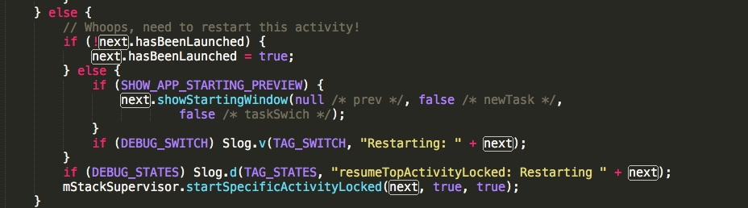
这里又将调用过程交给了ActivityStackSupervisor。
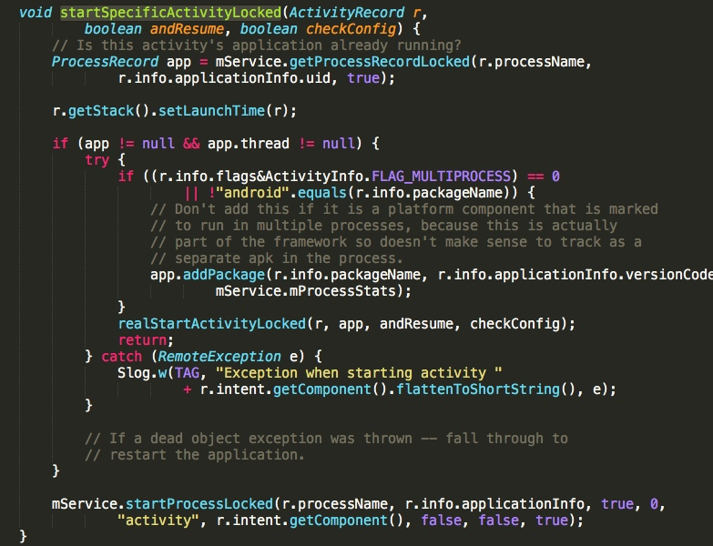
这里将调用realStartActivityLocked()
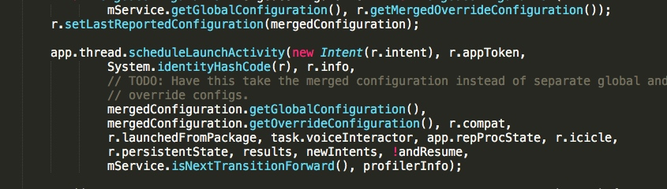
realStartActivityLocked()又调用了app.thread.scheduleLaunchActivity()，这个app.thread就是客户端调用系统AMS时传递过来的ActivityThread对象，因此这里就是在调用客户端的ActivityThread.scheduleLaunchActivity()
这里客户端指的就是当前的app进程，而服务端指的就是Android系统服务进程,可参看SystemServer类。之后也将会继续沿用客户端和服务端这样的概念。
小结二：
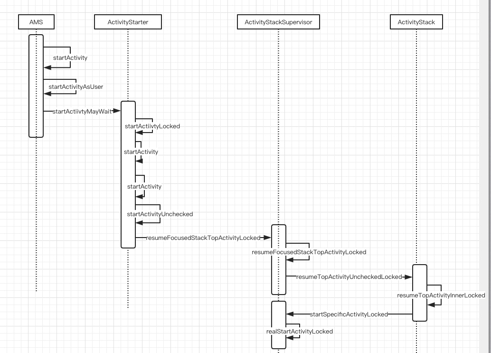
前面一个小结结束之后，我们已经将调用过程从系统服务回调到了客户端，那么我们现在就接着看客户端做了哪些操作。
首先我们来看看ActivityThread.scheduleLaunchActivity()
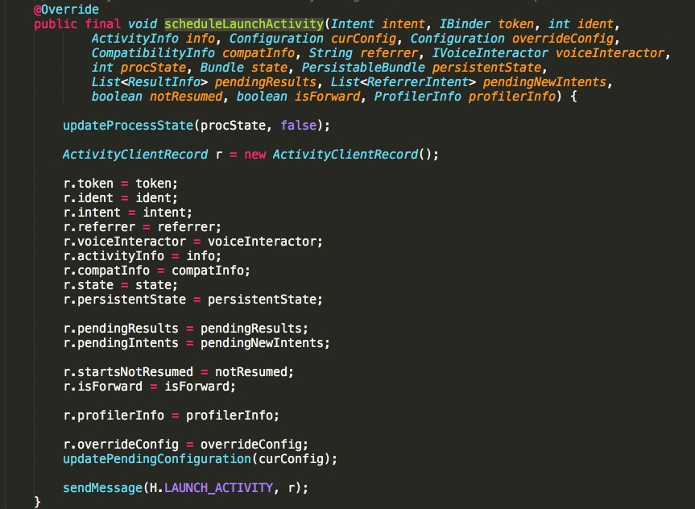
这个方法中主要是将AMS传递过来的参数封装到ActivityClientRecord的实例中，并将这个ActivityClientRecord发送到消息队列，等待消息的处理。
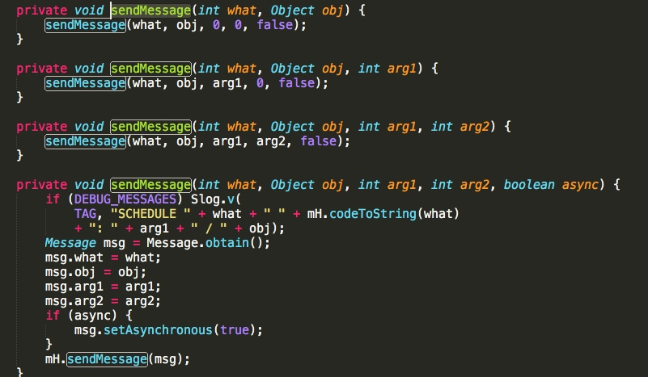
查看sendMessage()方法，可以确定消息是通过mH来发送的，我们来看看mH的定义。
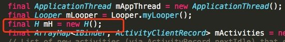
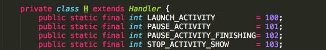
有定义内容可以知道mH就是一个Handler。
由上文我们知道ActivityThread.scheduleLaunchActivity()中发出的是一个LAUNCH_ACTIVITY消息，我们看看接收处的代码。
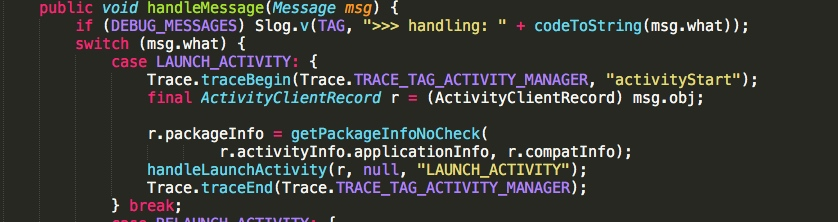
这里直接调用handleLaunchActivity() 来处理ActivityClientRecord ，继续查看这个方法
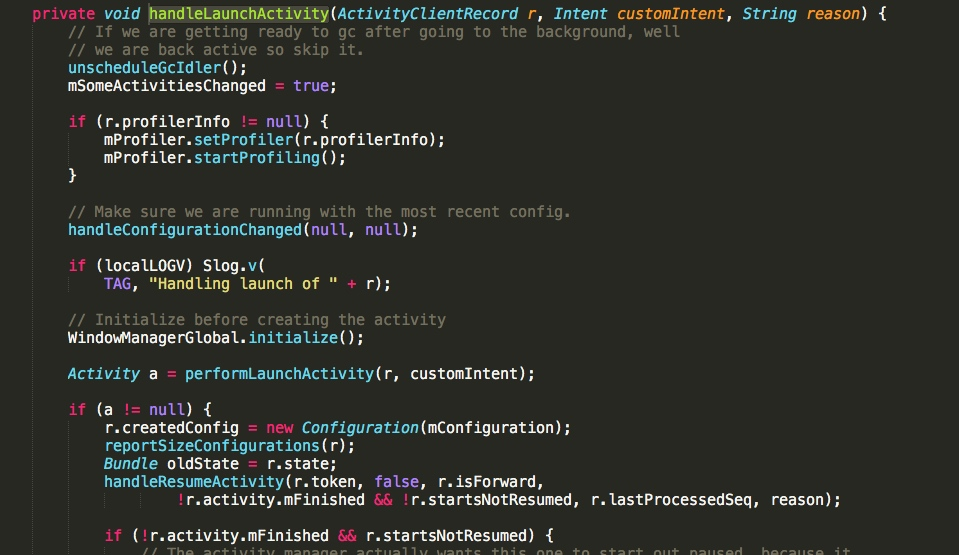
在这个方法中，有两个明显的方法名称，一个performLaunchActivity()，一个是handleResumeActivity()。我们先来看看performLaunchActivity()，这个方法比较长，内容也比较多，我们细分几段来查看。
第一段：
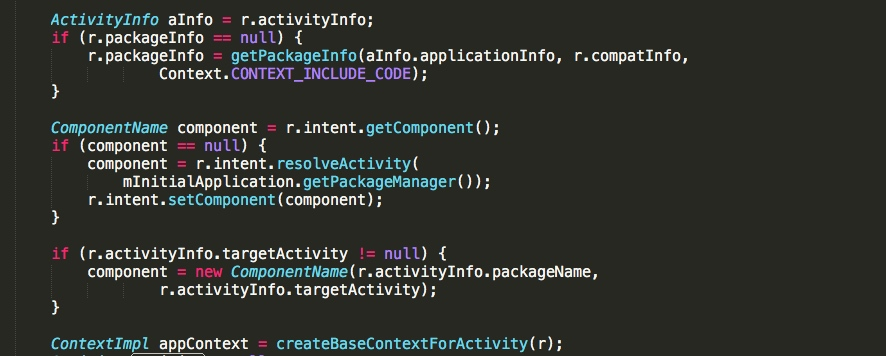
这里主要通过AMS传递过来的ActivityClientRecord进行包信息和ComponentName信息的构建。同时这个有个createBaseContextForActivity()
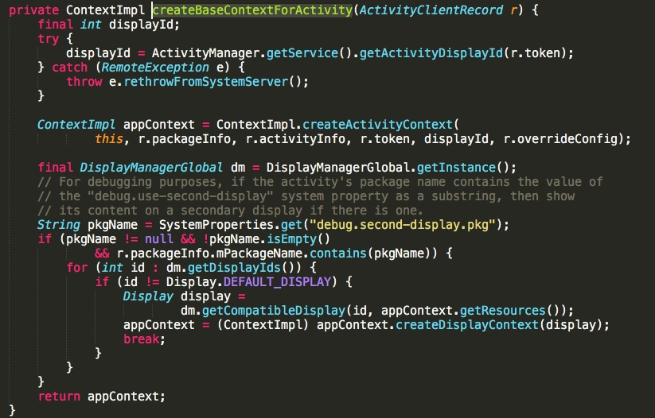
在这个方法中将创建ContextImpl对象。
由此可到这一段主要是创建Activity上下文信息。
第二段：
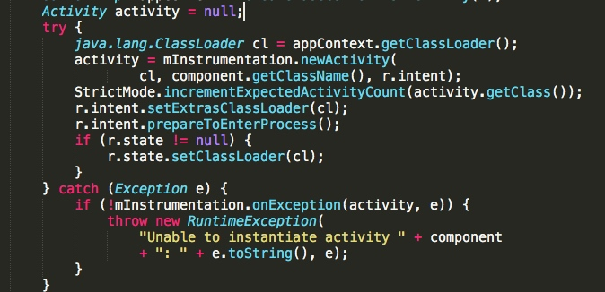
mInstrumentation.newActivity() 如下：
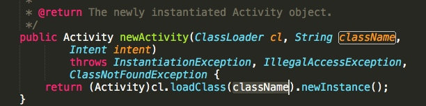
这里通过反射创建了一个Activity实例。
第三段：
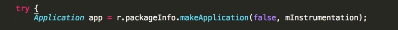
这里只是创建一个Applicatio的实例。
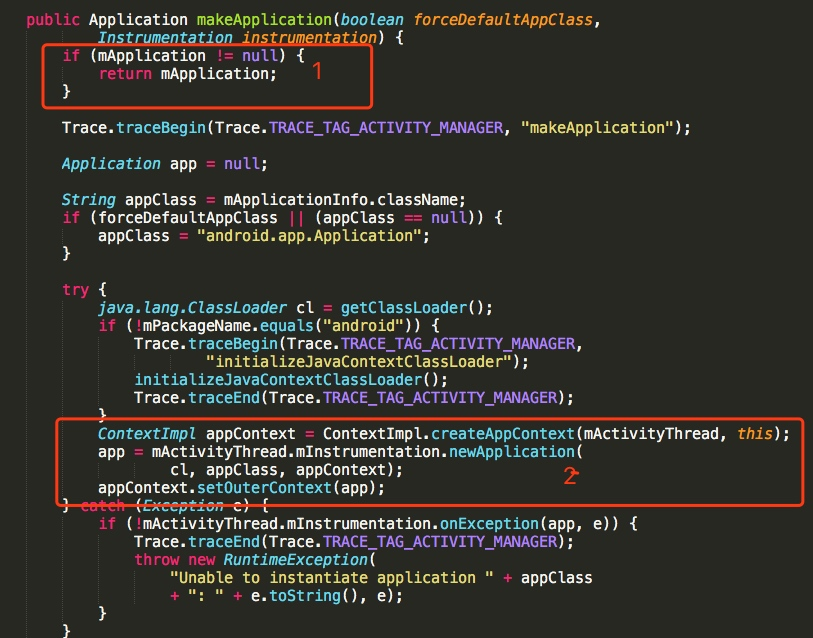
代码1判断，application对象已经创建，则直接返回，这也是为什么同一个进程中，我们的application可以保持为一个单例的原因。
代码2则是创建了Application所需的上下文ContextImpl实例，同时调用Instrumentation.newApplication()创建了Application实例。
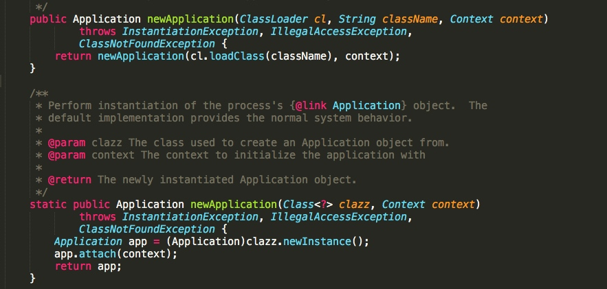
这里我们可以看到，Application也是通过反射来创建的。创建完成之后立即调用了Application.attach(),attach()中将继续调用attachBaseContext()
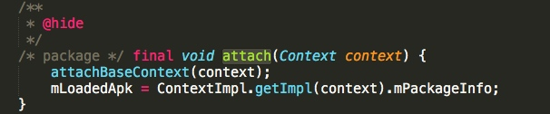
回到入口方法makeApplication(),继续往下看。
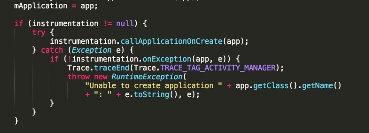
instrumentation.callApplicationOnCreate(app)
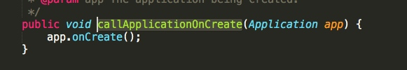
到这里，我们就将application的创建过程也看完了。所以第四段只是创建Application实例.
第四段
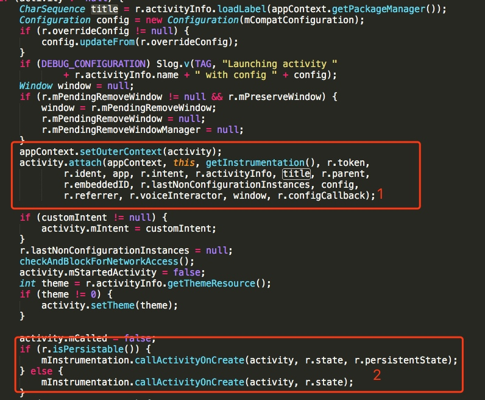
代码1就是调用了Activity.attach()。Activity.attach() 主要是创建Window信息。
代码2点进去，其实就在调用Activity.performCreate(),而performCreate()将调用onCreate()。
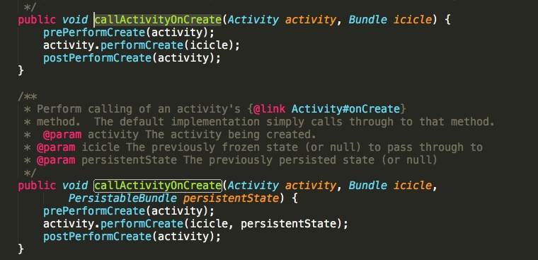
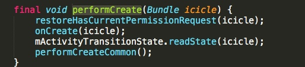
小小结：
第一段：创建Activity上下文
第二段：利用反射创建Activity
第三段：获取Application实例。如果已经存在则直接方法，如果未创建则利用反射创建Application实例，并调它的attach，onCreate等方法
第四段：调用Activity的attach和onCreate。值得一提的是attach() 中将创建window信息。
看到这里，我们基本已经明白了一个新Activity的创建过程，但是它是怎么作为一个界面显示出来的呢？这部分内容和WindowManagerService(简称WMS)相关，我们暂时先不讨论。以往我们常说，Activity在onResume之后才是可见的。那我们接下来就来找找这个说法的答案。
上文中的handleLaunchActivity(),除了performLaunchActivity(),我们还提到了handleResumeActivity(),接下来就点击去看看，这个方法又做了哪些操作。
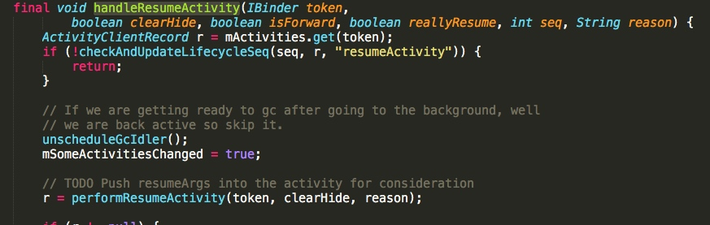
handleResumeActivity() 调用了actiivty.performResume()
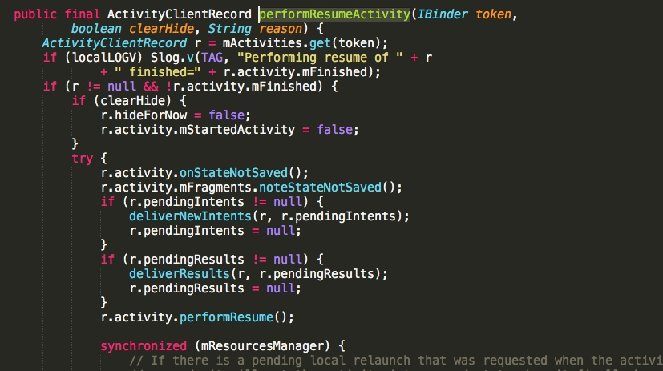
在performResume()中，注意红框内容，这里分别调用了performRestart() 和mInstrumentation.callActivityOnResume() 分别对应的Activity.onStart()、Activity.reStart()和Activity.onResume().具体调用过程比较简单，这里就不再描述了。
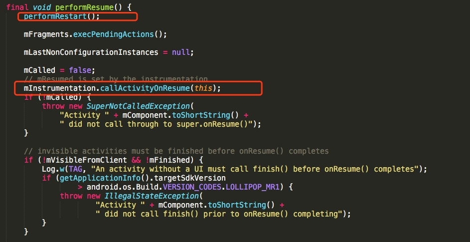
看到这里，我们也看完了activity.onResume的调用过程。但并没有找到到界面显示时机。我们回到handleResumeActivity()并继续往下看。
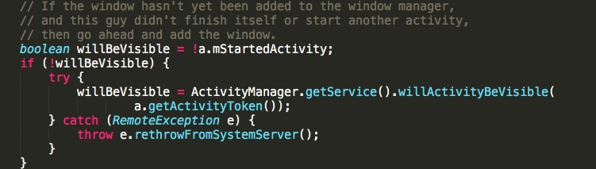
这里主要理解下注释：如果当前Activity的window未添加到WindowManager，这个activity就不可以关闭或打开新的activity。
 

这里先是将decor设置为不可见，然后将decor添加到WindowManager中。


这里又调用了一次mDecor.setVisibility(View.VISIBLE)将decorview设置为可见了。
看到这，我们也找到了Activity为什么是在onResume之后才是可见的。
小结：
scheduleLaunchActivity()之后，通过Handler.sendMessage()将线程切换回主线程，同时在主线程中并调用handleLaunchActivity()。而handleLaunchActivity()方法中又将调用performLaunchActivity()和handleResumeActivity()。
这个小点即是scheduleLaunchActivity之后的调用过程，是比较简单的，这里就不再绘制时序图了。
performLaunchActivity() 主要分为四个片段
2.1 创建Activity上下文ContextImpl
2.2 利用反射创建Activity
2.3 获取Application实例。如果已经存在则直接返回，如果未创建则利用反射创建Application实例，并调它的attach，onCreate等方法
2.4 调用Activity的attach和onCreate。值得一提的是attach() 中将创建window信息。handleResumeActivity
3.1 调用onstart，onReStart，onResume等方法
3.2 将decorview设置为不可见，然后将view添加到windowmanager
3.3 将decorview设置为可见
以上，一个Activity启动另一个Activity的过程，我们就算是看完了。这里主要将其分为三个步骤。
- 客户端Activity通过Instrumentation获取AMS，并代用AMS的startActivity()
- AMS中完成权限校验、Activity栈处理、目标Activity信息构建，然后通过ActivityThread.scheduleLaunchActivity回调到客户端
- 客户端通过handler将线程切换到主线程，然后在handleLaunchActivity() 中完成activity的创建和显示。